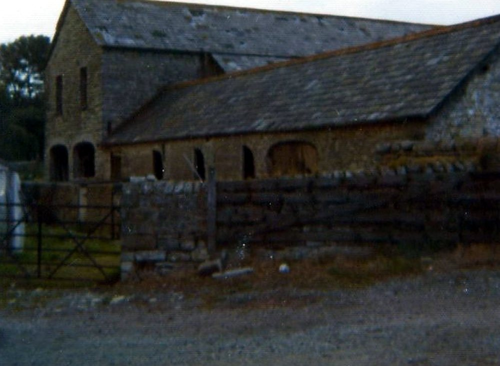

A Bute estate farm, c.1841–1938
For most of the nineteenth century and into the twentieth, the land around the house was part of the Bute estate, and the farm appears in the estate’s world: the tithe survey, the rate books, the trade directories and the estate’s own rent audits.
c. 1841 — The tithe apportionment: John Williams’s holding
- Record:
EV-0215 (Legal Wiki, Evidence Register)
What the record shows. The tithe apportionment for Llandough, Cogan and Leckwith lists John Williams as occupier of 36 parcels, about 119 acres, 33 of them owned by the Marquess of Bute and three glebe parcels.
What it does not show. It records occupation and landowner, not any lease, its term or its rent.
1868–1901 — Trade directories: John Williams at “Great House”
- Record:
EV-0225 (Legal Wiki, Evidence Register)
What the record shows. Six published directories (1868, 1875, 1880, 1887, 1891 and 1901) list John Williams at “Great house” or “Great House farm”, Llandough, and list the separate Llandough Farm under another name.
What it does not show. Directory entries are names supplied to the publisher; they say nothing about tenure or acreage.
October 1900 — The Bute estates in Leckwith-with-Llandough
- Record:
EV-0012 (Legal Wiki, Evidence Register)
“all his estates in the parishes of Leckwith, with Llandough, Michaelston-le-Pit, Cogan, Sully, Lavernock, Penarth and St Andrews”
What the record shows. Newspapers reported that the will of the 3rd Marquess of Bute left his estates in the parishes of Leckwith with Llandough, Cogan and neighbouring parishes to Lord Colum Crichton-Stuart.
What it does not show. A press summary of the will, not the will or any conveyance.


The farm buildings, from the farm’s own album (Part 1, no. 084). Source: Wayback Vault, album image.